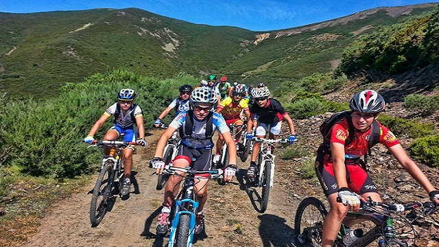
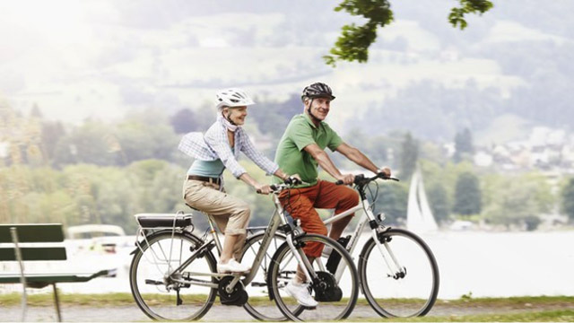

-

- 
- 
Es cierto que el ciclismo también tiene lesiones propias, pero sin duda es mucho menos lesivo que otros deportes como el running, por ejemplo. Al montar en bici nuestras articulaciones no sufren impacto alguno y el peso de nuestro cuerpo recae plácidamente sobre el sillín.
Montar en bici nos permite reducir la presión arterial y permite aumentar el ritmo cardíaco máximo. Además, todo apunta a que ayuda a eliminar el colesterol malo y aumenta el bueno.
Al montar en bici de manera regular nuestra sensación de fatiga irá disminuyendo y los niveles de energía irán en aumento. Todo esto, según diversos estudios, hace que tengamos más probabilidades de envejecer de una manera saludable .
El hecho de salir en bici un par de veces a la semana (al menos 20 minutos por salida) hará que nuestro sistema inmunitario se fortalezca y mantenga a ralla las infecciones y enfermedades. Algo muy común entre la gente que está en forma, es el hecho de que se resfrían menos y sufren en menor medida ese tipo de enfermedades comunes.
Montar en bici al menos dos veces a la semana (60 minutos cada una) te ayudará a mantener tu peso y reduce el estrés provocado por trabajo y el día a día. Después del esfuerzo realizado al montar en bici, nuestro cuerpo genera una serie de endorfinas que rebajan nuestros niveles de estrés y hacen que nos sintamos bien.
Nunca es tarde, dice el dicho. En ciclismo así ocurre también: nunca es demasiado tarde para comenzar a rodar y empezar a sentir todo lo que este deporte te puede aportar. Y si ya eres un adulto maduro, también, incluso si tienes entre 40 y 60 años, puede ser un buen momento para dar tu primera pedalada. Y los estudios científicos así lo corroboran.
Montar en bici en una actividad de bajo impacto articular que aumenta la resistencia física del niño a la vez que juega y se divierte
El sedentarismo y la obesidad es uno de los principales problemas actuales en niños y adolescentes. Con el ciclismo se pueden prevenir gran parte de los problemas físicos y enfermedades derivados de ellos
Montar en bici ayuda a que el organismo del niño consuma el exceso de grasa producido por una mala alimentación
Los niños que practican actividades físicas tienen un mejor rendimiento académico y mayor facilidad de aprendizaje
Los niños que aprenden a montar en bici adquieren confianza y experimentan su primeras sensaciones de logro
Es una buena manera de sensibilizarse sobre los medios alternativos de transporte en ciudad y sobre el cuidado de la naturaleza en el montaña
En niños activos, montar en bici les ayuda a reducir su ansiedad y sentirse mejor
Al montar en bici el niño fortalece la musculatura lumbar y mejora la posición de la espalda
El ejercicio físico al aire libre ayuda a fortalecer el sistema inmunológico
El ciclismo es una actividad que refuerza los lazos familiares. Al practicarse en familia se comparte una afición que crea vínculos más fuertes entre padres e hijos